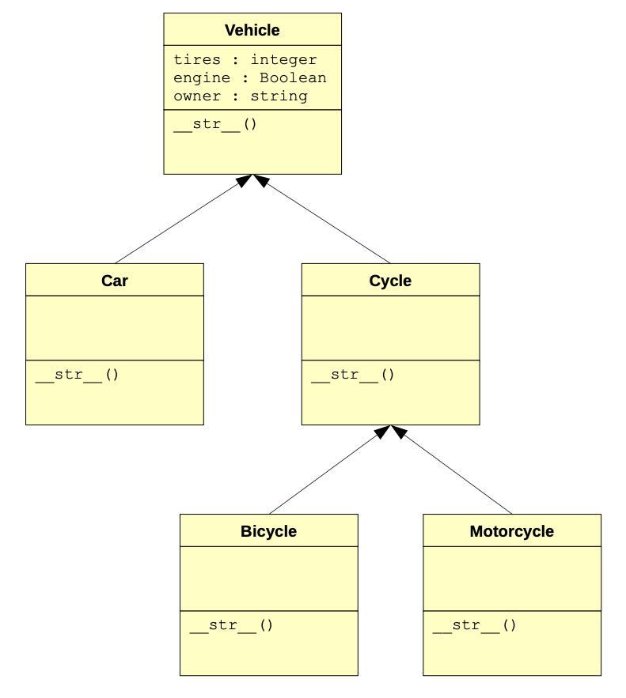
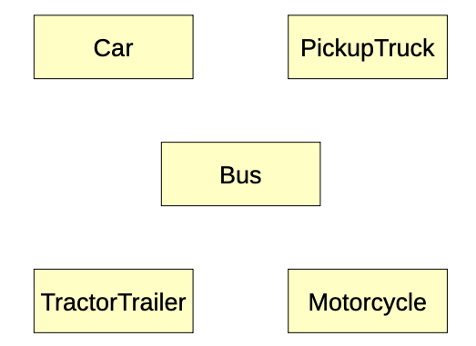
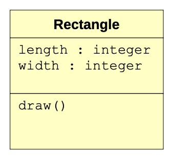
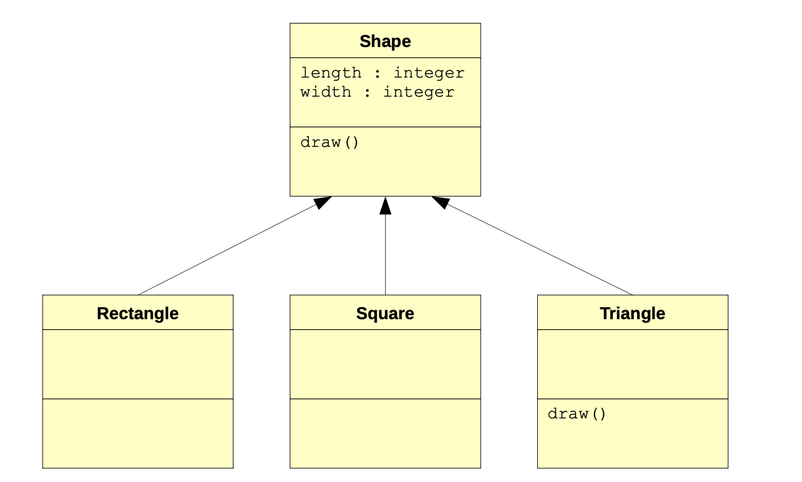
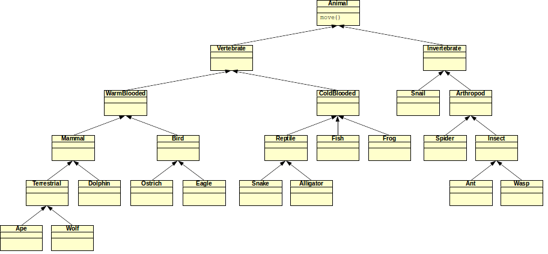
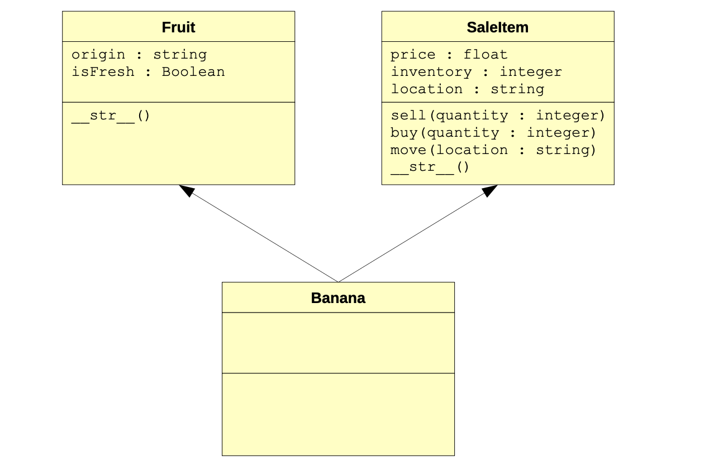

02 More on Objects
Inheritance
The last major topic that was discussed in the object-oriented paradigm was inheritance. To review, there are cases where it is advantageous to have one class (called a subclass) inherit state and behavior from another class (called a superclass). Using inheritance allows us, among many other things, to avoid excessive repetition and code duplication. This makes maintaining code much easier.
As an example, let’s assume that you are writing a program to store information about the kinds of vehicles that a car mechanic’s garage may deal with on a daily basis. For simplicity, suppose that the mechanic only keeps track of the number of tires that a car has (yes, there are some cars that have three tires), whether the car has a working engine, and the car’s owner. In this case, the car class would need three instance variables (one for each of the mentioned attributes). It may even have a function that allows a car’s information to be output in a meaningful way (i.e., it would implement a __str__ method). Even though the class is very basic, we’ll use it to make a point. Here is the source code for the Car class, along with some sample testing code in the main part of the program:
class Car:
def __init__(self, name):
self.tires = 4
self.engine = True
self.owner = name
def __str__(self):
return "Car; owner={}, tires={}, engine={}".format(self.owner, self.tires, self.engine)
c1 = Car("John")
print(c1)Of course, the output is fairly simple to determine:
Car; owner=John, tires=4, engine=TrueNow consider the case where, one day, the mechanic’s garage decides to repair bicycles as well. A very quick fix would be to create a similar class just for bicycles. In fact, here are comparisons of the Car and Bicycle classes (with a slightly modified main part of the program):
class Car:
def __init__(self, name):
self.tires = 4
self.engine = True
self.owner = name
def __str__(self):
return "Car; owner={}, tires={}, engine={}".format(self.owner, self.tires, self.engine)
class Bicycle:
def __init__(self, name):
self.tires = 2
self.engine = False
self.owner = name
def __str__(self):
return "Bicycle; owner={}, tires={}, engine={}".format(self.owner, self.tires, self.engine)
c1 = Car("John")
b1 = Bicycle("Jane")
print(c1)
print(b1)And here is the output of this modified program:
Car; owner=John, tires=4, engine=True
Bicycle; owner=Jane, tires=2, engine=FalseNotice the code duplication? In fact, the Bicycle class is almost an exact copy of the Car class. The only differences are that a bicycle has only two tires, has no engine, and is called a bicycle. As you might imagine, creating similar classes this way gets very ineffective the larger classes get, and the more classes an application requires. For example, what would need to be done if the garage decided to repair motorcycles as well? Expanding the example above, another class would have to be created. In fact, it would also be very similar to the Car class.
What would happen if a mistake were made in the source code that implements the way that tires are accounted for? Or suppose that an adjustment needed to be made (e.g., adding another instance variable to keep track of a spare tire). In the best case, modifications to all three classes would have to be made, thereby increasing the chances of making mistakes and causing errors.
As discussed previously, the concept of inheritance allows us to create a superclass that can encapsulate all of the common members that one or more subclasses can share. The subclasses that are created from some superclass can be considered to be specific subtypes of the superclass.
One way to modify the code in the example above to utilize inheritance is to create a Vehicle superclass that defines all of the members that are shared among all types of vehicles in the application: cars, bicycle, and motorcycles. The car, bicycle, and motorcycle classes would then inherit from and become subclasses of the Vehicle class. This greatly helps to reduce code duplication. To illustrate this, here are modified classes, along with some test code, that updates the classes above and implements inheritance:
class Vehicle:
def __init__(self, name):
self.tires = None
self.engine = None
self.owner = name
def __str__(self):
return "owner={}, tires={}, engine={}".format(self.owner, self.tires, self.engine)
class Car(Vehicle):
def __init__(self, name):
super().__init__(name)
self.tires = 4
self.engine = True
def __str__(self):
return "Car; " + super().__str__()
class Bicycle(Vehicle):
def __init__(self, name):
super().__init__(name)
self.tires = 2
self.engine = False
def __str__(self):
return "Bicycle; " + super().__str__()
class Motorcycle(Vehicle):
def __init__(self, name):
super().__init__(name)
self.tires = 2
self.engine = True
def __str__(self):
return "Motorcycle; " + super().__str__()
c1 = Car("John")
b1 = Bicycle("Jane")
m1 = Motorcycle("Randy")
print(c1)
print(b1)
print(m1)And here is the output of the program
Car; owner=John, tires=4, engine=True
Bicycle; owner=Jane, tires=2, engine=False
Motorcycle; owner=Randy, tires=2, engine=TrueLook over the code above and see if it makes sense to you. Notice the default values of None for the variables tires and engine. These values are overwritten in the subclasses, depending on which subclass is initialized, as follows:
| Class | tires | engine |
|---|---|---|
| Vehicle | None | None |
| Car | 4 | True |
| Bicycle | 2 | False |
| Motorcycle | 2 | True |
Also notice that the constructor of the Vehicle class (the superclass) is called in the constructor of each of the subclasses. In fact, this is the first statement in the constructors of the subclasses. That is, the initialization of a car, bicycle, and motorcycle first means to initialize a vehicle. This sets default values for the variables tires and engine. The owner of the vehicle is passed in when instantiating each of the subclasses, and is forwarded to the superclass (where the value is formally assigned). Any remaining initialization of the subclasses is done after the call to the constructor in the superclass (i.e., specific values for the variables tires and engine).
Also, the class output magic function __str__ also calls the matching function in the Vehicle superclass. Why? Well, it actually generates the appropriate output for any kind of vehicle (i.e., owner, number of tires, and whether or not it has an engine). The only distinguishing characteristic is the actual name of the class. Therefore, the subclasses first generate a string matching their name followed by a call to the superclass function (which generates a string containing the information specified above).
As a last modification, note that bicycles and motorcycles have the same number of tires. Since we can have many levels of inheritance, let’s try to add a generic Cycle class that encapsulates the attributes shared by all kinds of cycles (i.e., bicycles and motorcycles). To be clear, the application now has the following class diagram:

Implement the Cycle class; then, modify the Bicycle and Motorcycle classes to inherit from the Cycle class.
The act of designing an application, particularly a large one, requires consideration of many factors that help to ensure its success. That is, there are ideas that must be considered in order to make designing an application easier. Much of the remainder of this lesson is dedicated to identifying such techniques.
Abstraction and Modularization
Abstraction is the ability to ignore the details of parts of a system in order to focus our attention at a higher level.
Think of a Google map. When zoomed out to its default level, an entire city may be visible. Detailed street names, building structures, and so on, are invisible as they would clutter the map. Similarly, areas surrounding the city (e.g., state, region, country) are not visible. Zooming in reveals more detail of a part of the city; however, some of the surrounding detail that was present before is lost. Zooming out may further hide details, but bring in surrounding cities and towns. These zoom levels present just enough information that is required to process the map at that level.
The object-oriented paradigm is actually emblematic of this concept. Consider the traffic simulation application that was discussed in a previous lesson. In case you have forgotten, its goal was to model vehicle traffic in a large city for the purpose of analyzing how it manages traffic during rush hour. This kind of application would be useful in learning about traffic patterns, congestion, and so on. In fact, it could help to redesign roads, entrances to and exits from highways and interstates, the placement and timing of traffic signals, etc. As discussed, such an application may include classes for cars, pickup trucks, buses, tractor trailers, motorcycles, and so on, since all of these things contribute to the traffic in the city. We initially modeled it with the following class diagram:

In the simulation, the way in which cars, pickup trucks, buses, motorcycles, and so on, are implemented doesn’t matter to a city official using it to make zoning decisions. Those details are abstracted away from the user. As another example, the programmers tasked with extending the traffic simulation don’t necessarily need to know how a bus works to, say, support school zones in the simulation.
At its most basic level, the concept of an object represents a way of abstracting away data and operations into a single thing, the data being state and operations being behavior. To instantiate an object and use it in some programming context, there is no real need to know how some behavior is actually implemented, for example. Simply understanding the interface (i.e., how to invoke some sort of behavior) is enough. We just need to know what function to call, what parameters to pass it, and if we should expect a return value.
Modularization is the act of dividing a whole into well-defined parts that can be built and examined separately.
It is important to note, however, that the parts typically interact and must do so in well-defined ways. This facilitates reasoning about and maintenance of the application. In the traffic simulation example, the act of designing various classes to best represent the components of the application inherently demonstrates modularization.
Often, abstraction and modularization go hand-in-hand. In a sense, modularization results in different levels of abstraction throughout some application. Moreover, the goal of setting levels of abstraction in an application (for example, to make maintenance easier and more manageable) motivates modularization
Polymorphism
Let’s go back to the mechanic’s garage problem that was used earlier. Notice that all of the classes involved have their own __str__ function. When we execute a statement such as print(b1), which specific __str__ function is executed?
Method lookup solves the problem of finding the right method to call in a class hierarchy. The idea of having multiple methods with the same name in multiple classes is called polymorphism.
At first, it may seem confusing to have multiple functions in different classes with the same name; however, it turns out to be a very handy feature of object-oriented programming. Let’s answer the question that was initially posed: when we execute a statement such as print(b1), which specific __str__ function is executed? The variable b1 is a bicycle. Therefore, if an __str__ function exists in the Bicycle class, then it is executed. Indeed, one exists in the class. In fact, it contains the following single statement:
return "Bicycle; " + super().__str__()Note that the function also calls the __str__ function in the Cycle class via the right-hand part of the statement: super().__str__(). The entire string cannot be returned until __str__ in the Cycle class has finished execution. It, too, contains only a single statement:
return super().__str__()Clearly, it calls the __str__ function in the Vehicle class, which returns a string containing the owner of the vehicle, its number of tires, and whether it has an engine or not:
return "owner={}, tires={}, engine={}".format(self.owner, self.tires, self.engine)In the end, all three __str__ output functions are executed with the statement print(b1). What about the statement print(c1)? In a similar manner, we see that the __str__ function in the Car class is executed first (since c1 is an instance of the Car class). This function calls its matching function in the Vehicle class (in order to actually produce the string containing the car’s owner, number of tires, and whether it has an engine or not).
In both of these examples, the function that is called is the one located in the object reference’s defining class. That is, since b1 is a bicycle, then the function in the Bicycle class is called. Similarly, since c1 is a car, then the function in the Car class is called. The fact that there may be chained calls to matching functions in superclasses is just coincidence (however, it is intentional in order to produce the proper output).
Let’s take a look at a slightly modified version of the previous example. First, the classes:
class Vehicle:
def __init__(self, name):
self.tires = None
self.engine = None
self.owner = name
def __str__(self):
return "Vehicle; owner={}, tires={}, engine={}".format(self.owner, self.tires, self.engine)
class Car(Vehicle):
def __init__(self, name):
super().__init__(name)
self.tires = 4
self.engine = True
class Cycle(Vehicle):
def __init__(self, name):
super().__init__(name)
self.tires = 2
class Bicycle(Cycle):
def __init__(self, name):
super().__init__(name)
self.engine = False
def __str__(self):
return "Bicycle!"
class Motorcycle(Cycle):
def __init__(self, name):
super().__init__(name)
self.engine = True
def __str__(self):
return "Motorcycle; " + super().__str__()
# main
c1 = Car("John")
c2 = Cycle("Samantha")
b1 = Bicycle("Jane")
m1 = Motorcycle("Randy")
print(c1)
print(c2)
print(b1)
print(m1)This example has the same classes as the previous one. However, the __str__ functions have been changed in various ways.
Given the discussion above about method lookup, can you explain what the print statements in the main part of the program will produce?
Method lookup is essentially a simple concept. If a specified function is not found in a class, then a search for the matching function is performed in the superclass. In fact, method lookup works by continuously trying to find a matching function in the superclass hierarchy until one is found. If one is not found, then an error occurs.
Polymorphism is a powerful concept. It allows us to specify a function at a superclass level (including any desired implementation), and then to overwrite it at lower levels of the class hierarchy (i.e., in subclasses). Consider this a way to specialize or refine behaviors defined in superclasses.
Let’s look at an example of how this can be leveraged to produce efficient programs. Consider a scenario in which you want to write a program that can draw basic shapes (e.g., a rectangle). Such a program can be designed by creating a rectangle class that stores its length and width in instance variables, and has a draw function that produces a representation of that shape (for now, just using characters that can be found on a keyboard). A simple class diagram for this could be the following:

And here’s one possible method of implementing the class
class Rectangle:
def __init__(self, l, w):
self.length = l
self.width = w
def draw(self):
for i in range(self.width):
print("* " * self.length)
r1 = Rectangle(10, 4)
r1.draw()Lastly, here’s the output produced by the program above:
* * * * * * * * * *
* * * * * * * * * *
* * * * * * * * * *
* * * * * * * * * *Sure enough, we asked for a rectangle that is 10 units long by 4 units high. And that’s what we got! Now suppose that we want to expand the program to be able to accommodate squares. Squares are very similar to rectangles except that their length and width are always equal. Considering what we now know about inheritance and polymorphism, we could create a generic shape class that both squares and rectangles could inherit from.
Here’s an updated version that implements this:
class Shape:
def __init__(self, l, w):
self.length = l
self.width = w
def draw(self):
for i in range(self.width):
print("* " * self.length)
class Rectangle(Shape):
def __init__(self, l, w):
super().__init__(l, w)
class Square(Shape):
def __init__(self, l):
super().__init__(l, l)
r1 = Rectangle(12, 4)
r1.draw()
print()
s1 = Square(6)
s1.draw()The Square and Rectangle classes are subclasses of the Shape class. Note that they have no instance variables or functions unique to them. That is, they inherit everything from their superclass. The only difference between the two is that the constructor of the Square class takes only one argument, while the constructor of the Rectangle class takes two arguments. Within their individual implementations, they both call the constructor of the Shape class.
When we want to draw a square or rectangle, we call the draw function. Method lookup makes it easy to see that the draw function in the Shape class will be executed. Why? Because the Square and Rectangle classes don’t have a draw function of their own, but their superclass (the Shape class) does.
Since one of the benefits of inheritance is to increase code reuse and to ease expansion and application feature enhancement, let’s do precisely that by adding the ability to create and draw triangles. To simplify this, let’s just consider right-angled isosceles triangles (i.e., the two sides making up the right angle are of equal length). Since triangles are shapes too, it makes sense to make them a subclass of the Shape class, yielding the following modified class diagram:

Note the specification of the draw function in the triangle class. The shape of a triangle is different from that of a square or a rectangle, and the process of drawing that shape is therefore different. Polymorphism allows us to create another function, also called draw, but specifically for triangles. This overwrites the draw function specified in the Shape class, and effectively specializes the draw behavior for a triangle. This version of draw would only be executed on an object reference of the type Triangle.
Here is the new Triangle class, along with an updated main part of the program (note that the rest of the program that defines the other classes remains unchanged):
class Triangle(Shape):
def __init__(self, l):
super().__init__(l, l)
def draw(self):
for i in range(self.width):
print("* " * (self.width - i))
r1 = Rectangle(12, 4)
r1.draw()
print()
s1 = Square(6)
s1.draw()
print()
t1 = Triangle(7)
t1.draw()The output of this modified program is as follows:
* * * * * * * * * * * *
* * * * * * * * * * * *
* * * * * * * * * * * *
* * * * * * * * * * * *
* * * * * *
* * * * * *
* * * * * *
* * * * * *
* * * * * *
* * * * * *
* * * * * * *
* * * * * *
* * * * *
* * * *
* * *
* *
* Pay close attention to the following statements in the draw function of the Triangle class:
for i in range(self.width):
print("* " * (self.width - i))The variable i iterates from 0 through the width of the triangle (minus one). Since the triangle is seven units long, then i iterates from 0 through 6 (exactly seven times). The first time in the for loop, the variable i is equal to 0. Therefore, the number of asterisks displayed is 7 – 0 = 7. The next time through the loop, i is equal to 1, and 7 – 1 = 6 asterisks are displayed. This continues until the last time through the loop, where i is equal to 6 and 7 – 6 = 1 asterisk is displayed.
Acivity: Zooland
Now that you have an idea about polymorphism and method lookup, let’s look at a hypothetical example in which we’ll be more concerned about the placement of the polymorphic methods rather than their actual implementation.
Suppose that you are writing a program to model (i.e., programmatically represent) the types of animals that are in a zoo. Such a situation would easily lend itself to inheritance, since there are multiple animals that are similar in nature (and could therefore inherit similar traits from a superclass). In fact, a possible class diagram for such a program is shown on the next page.
The class diagram shows how a variety of animals are related. All animals move; therefore, a move function is defined in the topmost Animal class. That particular version of move is implemented as: “move in a given direction using four limbs, all of which are in contact with the ground at some point.”
Of course this definition of move is not accurate for some of the animals that are in the class diagram. The objective of this activity is to place one of the following alternate versions of move in the appropriate classes, such that all animals move in their proper way. Since the motivation behind inheritance is primarily to reduce code duplication, the goal is to place as few move functions in the hierarchy as possible. Here are the alternate versions of the move function:
Move in a given direction using four limbs, all of which are in contact with the ground at some point (note that this is the version in the animal class);
Move in a given direction using two limbs, both of which are in contact with the ground at some point;
Move in a given direction using wings or wing-like body parts;
Move in a given direction using six or more limbs, all of which are in contact with the ground at some point;
Move in a given direction using fins or fin-like body parts; and
Move in a given direction by slithering on the ground.
Remember that the higher up a function is in the inheritance hierarchy, the more classes it can be applied to. In addition, it is possible that a better result is obtained by removing or changing the version of move currently in the Animal class to another version. Note that in cases where an animal could potentially implement more than one of the given versions of move, assume that the animal only uses the more dominant version. For example, while an eagle could walk on two limbs, it predominantly flies through the air to move; therefore, use version (3).

Multiple Inheritance
In the previous lesson on the object-oriented paradigm, the concept of multiple inheritance (and how it differs from single inheritance) was briefly discussed. In this lesson, we have only looked at cases where a class only inherits traits from a single superclass. Most programming languages only support single inheritance; however, there are cases where it would be advantageous to support inheriting traits from more than one superclass.
Single inheritance is when a class inherits traits from a single superclass. Multiple inheritance is when a class inherits traits from two or more superclasses. Some languages only support single inheritance while others (such as Python) support multiple inheritance.
To illustrate this again, consider the example used previously of a grocery store’s items. A banana, for example, is a fruit. Therefore, it may inherit traits such as type and country of origin from a Fruit superclass. However, in the context of a grocery store, a banana is also an item for sale. Such a sale item may have a price, an inventory, and a shelf location, for example. Inheriting from both a Fruit superclass and a SaleItem superclass would then be useful in implementing the point-of-sale system for a grocery store. Here’s a class diagram that illustrates this:

To declare a class as having more than one superclass, we simply put the names of its superclasses (each separated by a comma) in the parentheses following its class name. Here’s an example with the banana class:
class Banana(Fruit, SaleItem):
...Method lookup in the context of multiple inheritance raises an interesting question: which function is called if more than one superclass has a function with the same name? For example, the Banana class does not have the __str__ function as shown in the class diagram; however, both the Fruit and SaleItem classes do. So which of the two __str__ functions is executed supposing some print statement on an object reference of the Banana class is executed?
Since the Banana class has no __str__ function, then the normal behavior is to find the matching function in the superclass. However, the banana class has two superclasses. With multiple inheritance, method lookup is carried out in the order in which the superclasses are listed in the class arguments. In the Banana class header shown above, for example, the matching function would first be searched for in the Fruit class since it is the first superclass listed. If found (which it clearly is), it is executed; if not, then the matching function would be searched for in the SaleItem class. If found, it would be executed; if not, an error would occur (since the method would never have been found).
Abstract Methods
One of the benefits of the object-oriented paradigm in programming is that it easily allows for more than one programmer to be involved in the implementation of a system. The implementation is often divided according to classes (e.g., one team of programmers works on one class while another team deals with another class). In these cases, it is important to include measures that allow any programmer to know the expectations of each class. One of the measures that helps with this is the idea of abstract methods.
Consider the animal hierarchy that was discussed earlier in this lesson. Suppose that one team was tasked with the design of the Animal class, and another with the design of various classes at the bottom of the hierarchy. Generally, it is good programming practice to put the members that all (or many of) the classes will use higher up in the hierarchy. Suppose that the project required a function to represent the way animals communicate (i.e., sound and motion cues). We know that all animals communicate in one way or another; however, there is no general way that applies to the majority of the animals. In this scenario, it is beneficial to use an abstract method.
An abstract method in a class is a way of promising that any subclasses of some superclass will provide implementation details for that method.
In the communication example above, the Animal class has no general way of implementing some sort of communicate function. Since all animals communicate, it is imperative that all subclasses provide an explicit implementation for the communicate function.
In Python, a method in a class is made abstract by providing a single statement that generates an error noting that a subclass has not implemented the abstract method. In Python (as in many other object- oriented programming languages), errors can be raised or thrown to alert the user of some sort of problem. In Java, for example, errors (actually called exceptions) are thrown. In Python, errors are raised. This will be discussed thoroughly in a future lesson. For now, it is sufficient to note that abstract methods can raise an error known as a NotImplementedError. Should a subclass not implement a function defined as abstract in the superclass, and an object reference of the subclass tries to call it, the error will be raised. This terminates the program.
Here is an example of a simple Animal class (with the abstract method communicate) and a Bird subclass. The Bird subclass does not implement the abstract method in this example:
class Animal:
def __init__(self):
""" Constructs a new Animal """
def communicate(self):
""" How an animal communicates """
raise NotImplementedError("Abstract method communicate not implemented in subclass!")
class Bird(Animal):
def __init__(self):
""" Constructs a new Bird """
b = Bird()
b.communicate()The functions above simply have comments instead of any actual implementation; however, they can still be used to understand the concept. The Animal class has a constructor and an abstract function called communicate. Making that function abstract is a way of enforcing that all subclasses have an actual implementation of it (instead of, for example, hoping that whoever is working on that class remembers to implement it). Note the only statement in the function:
raise NotImplementedError("Abstract method...")The Bird class has not implemented the communicate function in this example. Therefore, the statement b.communicate() causes a NotImplementedError to be raised:
Traceback (most recent call last):
File "...\02 More on Objects\code\abstract1.py", line 14, in <module>
b.communicate()
File "...\02 More on Objects\code\abstract1.py", line 7, in communicate
raise NotImplementedError("Abstract method communicate not implemented in subclass!")
NotImplementedError: Abstract method communicate not implemented in subclass!But why is the error raised? It all comes down to method lookup. Since the function is not defined in the Bird subclass, then it is searched for in its superclass (i.e., the Animal class). Of course, it is found there; however, it only contains the statement that raises the error. And so the error is raised!
To show that actually implementing the communicate function in the Bird class works, here’s a modification of the above program:
class Animal:
def __init__(self):
""" Constructs a new Animal """
def communicate(self):
""" How an animal communicates """
raise NotImplementedError("Abstract method communicate not implemented in subclass!")
class Bird(Animal):
def __init__(self):
""" Constructs a new Bird """
def communicate(self):
""" How a bird communicates """
print("A Bird communicates!")
b = Bird()
b.communicate()The output of the program is the single line:
A Bird communicates!Note the comments in the constructors of the Animal and Bird classes. These functions have no actual code. You may be wondering why Python doesn’t generate the error: IndentationError: expected an indented block. Recall that using the keyword pass is an easy way of stubbing out functions whose details will be provided at a later time. Python considers comments specified with three quotes (single or double) to be a valid statement. Therefore, another way to stub out a function (without using the keyword pass) is to provide such a comment.
Another way of implementing an abstract method is by making use of the Abstract Base Class (abc) library that is packaged with Python. When imported, a method can be marked as abstract in the same way that one can be marked as an accessor or mutator. The difference is the decorator used to mark the function: @abc.abstractmethod. This method ensures that a TypeError will be raised immediately upon the instantiation of a subclass if the abstract method is not implemented in the subclass. Note that the following statement must be placed at the top of the class (i.e., after the class signature) in order for this method to work:
(metaclass = abc.ABCMeta)Here’s an example of a modified Animal class that implements this way of including abstract methods:
import abc
class Animal(metaclass = abc.ABCMeta):
def __init__(self):
""" Constructs a new Animal """
@abc.abstractmethod
def communicate(self):
""" How an animal communicates """
class Bird(Animal):
def __init__(self):
""" Constructs a new Bird """
b = Bird()
b.communicate()Note the differences. First, the abc library is imported. Second, the communicate method is marked as abstract via @abc.abstractmethod. Third, the class has the following statement with its signature:
(metaclass = abc.ABCMeta)When the variable b is instantiated as a new object of the Bird class, the following error occurs:
Traceback (most recent call last):
File "...\02 More on Objects\code\abstract3.py", line 17, in<module>
b = Bird()
TypeError: Can't instantiate abstract class Bird with abstract methods communicateTo show that actually implementing the abstract method in the Bird subclass works with this way of including abstract methods, here is working source code:
import abc
class Animal(metaclass = abc.ABCMeta):
def __init__(self):
""" Constructs a new Animal """
@abc.abstractmethod
def communicate(self):
""" How an animal communicates """
class Bird(Animal):
def __init__(self):
""" Constructs a new Bird """
def communicate(self):
""" How an animal communicates """
print("A Bird communicates!")
b = Bird()
b.communicate()The output of the program is the single line:
A Bird communicates!In standard practice, the first method is usually preferred. The main reason for this is that the second is not particularly Pythonic. Python prides itself in being dynamic and obvious. That is, it is quite readable that the communicate method defined in the Animal class must be implemented in the Bird subclass because it raises an error if it is called. On the other hand, the first method requires the unimplemented function to actually be called by an object reference of the first class before an error is raised. The second method immediately raises an error when an object of the subclass that doesn’t implement the abstract method is instantiated. So in the end, take your pick.
Abstract Classes
Recall the Zooland activity discussed earlier. Although the Animal class exists and can be instantiated, what kind of animal would such an instance imply? That is, what kind of animal would it be? In fact, it could be any animal. The intended behavior is most likely to only allow the creation of instances of the various animals at the bottom of the hierarchy. For example, instantiating an Ostrich, Dolphin, and Wolf should be allowed. However, instantiating a Bird, Mammal, or Terrestrial (Mammal) should not since they aren’t specific enough and really describe groups or types of animals.
Instantiating any class in the hierarchy can create confusion because it could potentially allow instances of objects that were not planned in the design. We can restrict the instantiation of the Animal class, for example, by making it abstract. That way, no one can just instantiate an Animal object.
Abstract classes are classes designed solely to be used as superclasses and never to be instantiated.
Ensuring that the subclasses of abstract classes are not abstract means that they can be instantiated.
In Python, the only way to make a class abstract is to use the Abstract Base Class method discussed above. To prevent the class from actually being instantiated, at least one of its methods must be made abstract. The following Animal class, for example, cannot be instantiated because its communicate method is abstract:
import abc
class Animal(metaclass = abc.ABCMeta):
def __init__(self):
""" Constructs a new Animal """
@abc.abstractmethod
def communicate(self):
""" How an animal communicates """
class Bird(Animal):
def __init__(self):
""" Constructs a new Bird """
def communicate(self):
""" How an animal communicates """
print("A Bird communicates!")
a = Animal() Note that the program above is the same as before, except that the main part of the program has been changed to attempt to declare an instance of the Animal class. Here’s the output:
Traceback (most recent call last):
File "...\lessons\02 More on Objects\code\abstract5.py", line 21, in <module>
a = Animal()
TypeError: Can't instantiate abstract class Animal with abstract methods communicateMake sure that you understand that using the abc library to implement abstract methods means that the entire class is also abstract. However, it is the only way to actually make an entire class abstract. So which method should you choose? If you want to make entire classes abstract, then you must use the second method (i.e., using the abc library). If you just want to make one or more functions in a class abstract but not the entire class, then use the first method.
As discussed above, abstract classes cannot be instantiated, and are instead only used as superclasses to define state and behavior that can be inherited by subclasses. Concrete classes are those classes that can be instantiated.
Coupling and Cohesion
So far in this lesson, the concepts that have been discussed all help in designing code. In particular, you may have noticed that they help reason about and design large projects involving many programmers. The kinds of projects that you will likely work on in an educational setting are usually small in comparison to the kinds of projects that professionals work on in industry. These large projects require careful consideration when designing them, programming them, and later testing them, so that they are manageable and ultimately produce a solution that solves some original problem.
The rest of this lesson will focus on a few more topics that help address the design of applications. The first looks at the connections between separate units of a program.
A unit is any reasonably self-contained component of a program.
For example, a class can be considered a unit. But at another level of abstraction, so can a function. In fact, the function can be considered as zooming in on a class. Zooming out of a class may reveal several classes, all contained within some library. The library can also be considered a unit, just at another level of abstraction.
Coupling refers to links between the separate units of a program.
If two classes depend closely on one another, we say that they are tightly coupled. Similarly, if two methods depend closely on one another, they are tightly coupled. Two units that do not depend closely on one another are loosely coupled. When designing applications, we aim for loosely coupled units, or generally just loose coupling. Why? Because it makes it possible to understand one unit without having to understand others. In the end, it just makes things simpler. For example, we can change one class with little to no effect on other classes. This increases maintainability. We try to avoid tight coupling, because changes to a unit that is tightly coupled with one or more other units can cascade and result in a chain of additional changes to the other units.
Cohesion refers to the number and diversity of tasks that a single unit is responsible for.
If a unit is responsible for a single task, we say that it has high cohesion. If a unit is responsible for many tasks, we say that it has low cohesion. When designing applications, we aim for high cohesion. The more simple and lean a unit is, the easier it is to understand what it does. It’s just that much easier to reason about and maintain.
Generally, applications that are highly cohesive often make it easy to reuse units in order to reduce code duplication. Low cohesion implies that units perform multiple tasks and have no clear identity. So what does this mean specifically in terms of application design? At the class level: classes should represent one single, well defined entity; and at the function level: a function should be responsible for one well defined task.
Designing applications with loose coupling and high cohesion helps with localizing change. When change is needed, as few units as possible should be affected. In fact, we can use the concepts of coupling and cohesion to answer the questions, “How long should a class be?” and “How long should a function be?” Simply put, a function is too long if it does more than one logical task, and a class is too complex if it represents more than one logical entity. Of course, these are guidelines; the real world is often a bit more complicated.